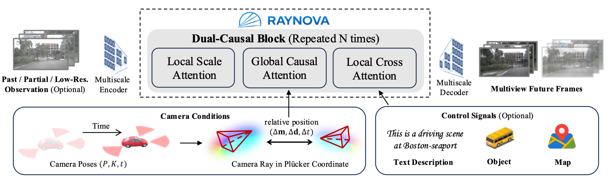
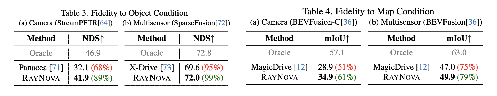

RAYNOVA: Scale-Temporal Autoregressive World Modeling in Ray Space
Contact: research@applied.com
TL;DR
We propose a scale-temporal dual-causal autoregressive multiview world model that unifies space and time with ray-level relative positioning.
Abstract
World foundation models aim to simulate the evolution of the real world with physically plausible behavior. Unlike prior methods that handle spatial and temporal correlations separately, we propose RAYNOVA, a geometry-agonistic multiview world model for driving scenarios that employs a dual-causal autoregressive framework. It follows both scale-wise and temporal topological orders in the autoregressive process, and leverages global attention for unified 4D spatio-temporal reasoning. Different from existing works that impose strong 3D geometric priors, RAYNOVA constructs an isotropic spatio-temporal representation across views, frames, and scales based on relative Plücker-ray positional encoding, enabling robust generalization to diverse camera setups and ego motions. We further introduce a recurrent training paradigm to alleviate distribution drift in long-horizon video generation. RAYNOVA achieves state-of-the-art multi-view video generation results on nuScenes, while offering higher throughput and strong controllability under diverse input conditions, generalizing to novel views and camera configurations without explicit 3D scene representation.

Methodology
RAYNOVA applies a pure autoregressive architecture with discrete tokens free of any diffusion modules. It auto-regresses along two dimensions simultaneously: scale and time. Instead of forcing a particular 3D structure, it represents the token position in camera ray space — a representation that naturally connects views, frames, and scales without explicitly constructing a 3D scene graph.
Figure 2: Overview of RAYNOVA Framework. RAYNOVA is composed of dual-casual (scale and time) blocks. The local scale attentionand local cross attention works on each image indepedently, while the global causal attention works across multi-view and multiframe images enhanced with a unified ray-level relative position embedding for better spatio-temporal consistency.
Figure 3: Dual-Causal Autoregression. Green arrows represent the causal dependency, while the darkness indicates the topological order of autoregression (from light to dark)
Dual-Causal Autoregression
RAYNOVA auto-regresses along two dimensions simultaneously: scale and time. It generates images scale by scale: first coarse structure then fine-grained details. At the same time, the model autoregresses across frames. The current frame is conditioned on all views from previous frames to create a unified temporal reasoning process across multi-view inputs. This dual-casuality enables efficient long-horizon video generation with flexible frame rate and image resolution.
Ray-Level Relative Position
To reason across views and time, the model must know how tokens relate to each other spatially and temporally. Without any global coordinate frame, RAYNOVA instead uses relative positions in camera ray space. It encodes how tokens relate to each other across views, frames, and scales with minimal handcrafted geometric bias. Since it is relative rather than absolute, the model does not memorize a specific world layout. As a result, RAYNOVA is designed as a scalable data-driven framework that supports heterogeneous training data, unseen camera configurations and extrapolation beyond training range.
Figure 4: Ray-Level Relative Position Embedding. The ray-level relative position embedding is computed by the difference between the camera ray coordinates.
Results
Multiview Video Generation
We compare quantitative metrics against state-of-the-art methods on nuScenes dataset. Our method consistently outperforms baselines in visual quality while generating multiview video with higher resolution and lower latency.


Fidelity to Conditions
We apply perception models pretrained on real scenes to our synthesized videos to evaluate the fidelity to conditions. Both vision-based and multi-modal (combined with ground-truth point clouds) perception models are considered in the evaluation to comprehensively evaluate both the semantic and geometric realism of our synthetic scenes.
Novel View Synthesis
Thanks to the flexible ray-level relative position embedding, RayNova is able to synthesize novel views with different camera shifts, rotations, and fields-of-views. It can even support scenes with novel camera configurations that are unseen in the training data.
Figure 6: Novel View Synthesis with Camera Shifts (top) and Rotations (bottom).
Citation
@article{xie2026raynova,
title={RAYNOVA: Scale-Temporal Autoregressive World Modeling in Ray Space},
author={Xie, Yichen and Peng, Chensheng and Abdelfattah, Mazen and Hu, Yihan and Yang, Jiezhi and Higgins, Eric and Brigden, Ryan and Tomizuka, Masayoshi and Zhan, Wei},
journal={IEEE/CVF Conference on Computer Vision and Pattern Recognition (CVPR)},
year={2026}
}